Dosen Pengampu:
1. Pengantar & Apa Itu Internet?
2. The Network Edge & Access Media
3. The Network Core & Switching
4. Quality of Service (QoS) & Model Berlapis
5. Keamanan Dasar, Sejarah & Evaluasi
Definisi & Klasifikasi Jaringan, Pendekatan Nuts & Bolts vs Services View, serta Protokol & Standar
Definisi Jaringan
Menurut KBBI: Sekelompok komputer dan perangkat terkait yang dihubungkan dengan fasilitas komunikasi.
Secara umum, Jaringan Komputer adalah sekumpulan komputer yang saling terhubung sehingga memungkinkan komunikasi, pertukaran data, dan pemanfaatan sumber daya bersama.
Mengapa Penting?
Mendefinisikan internet berdasarkan infrastruktur perangkat keras (hosts, kabel, router/switch) beserta perangkat lunak pengendali jaringan.
Mendefinisikan internet sebagai infrastruktur yang menyediakan layanan bagi aplikasi terdistribusi (Web, Game, Email, Streaming).
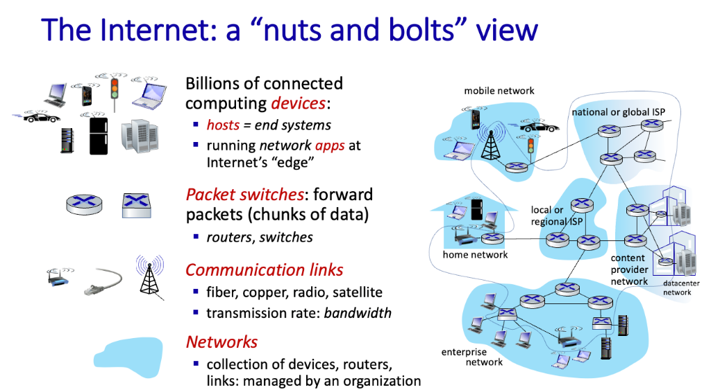
Infrastruktur Aplikasi Terdistribusi
Socket Interface
TCP SYNTCP SYN-ACKGET index.htmlEnd Systems, Access Networks (Home HFC/DSL/FTTH, Wireless, Enterprise), serta Media Fisik Guided & Unguided
Access Network adalah jalur fisik penghubung antara perangkat ujung (End System / Host) ke Edge Router pertama milik ISP. Terbagi dalam tiga kategori utama:
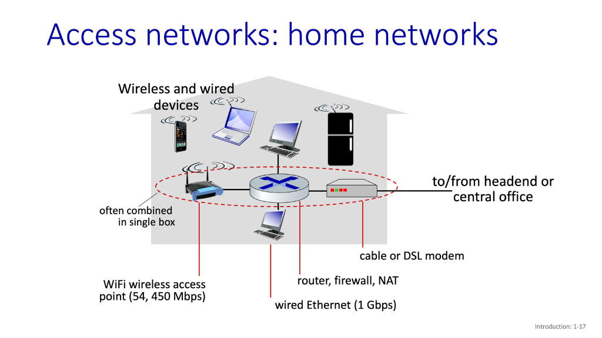
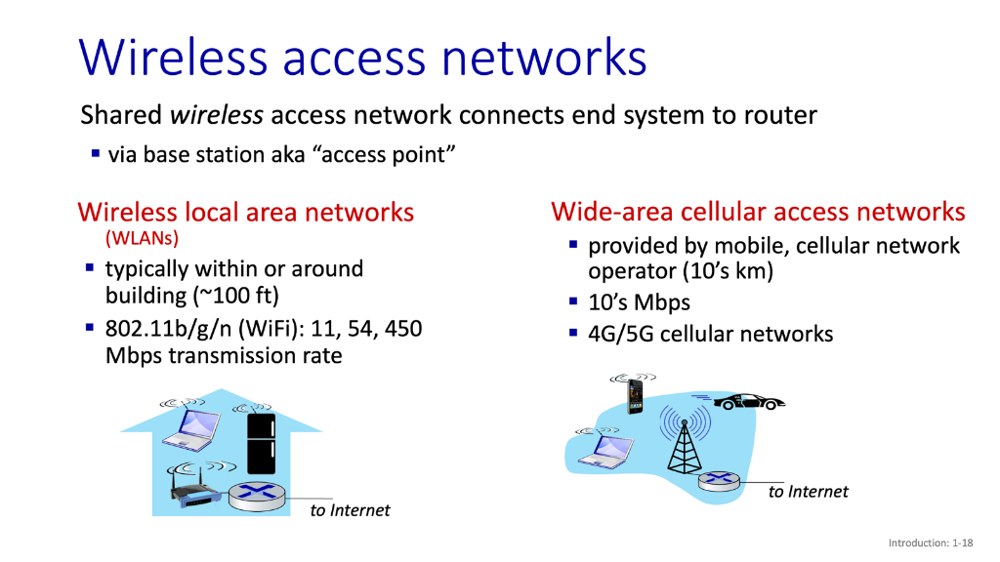
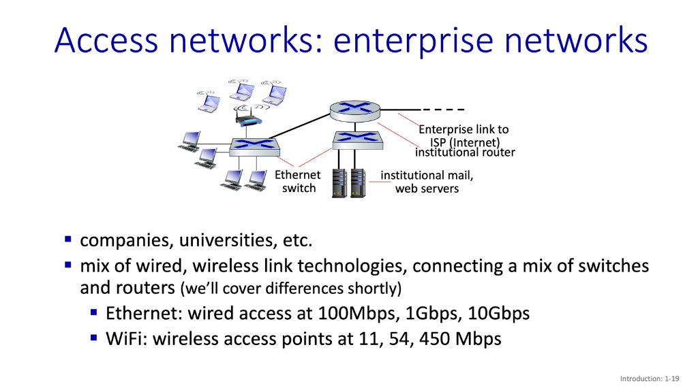
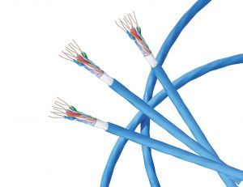
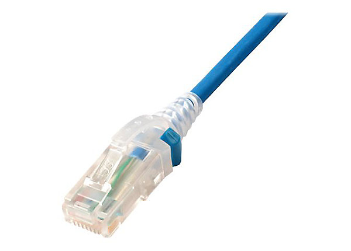
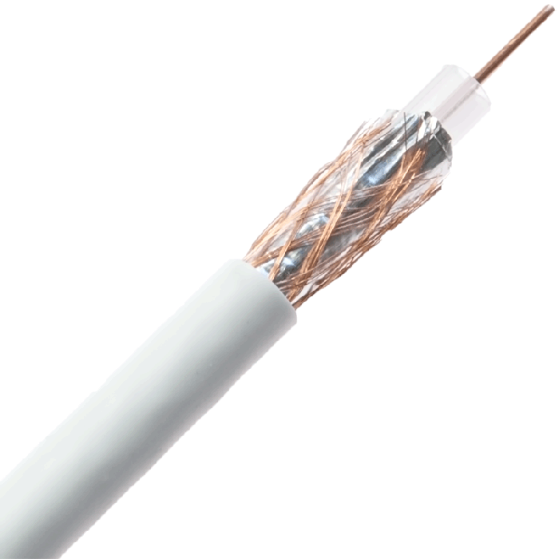
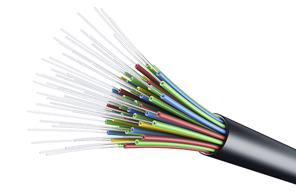
Gelombang elektromagnetik merambat bebas di atmosfer tanpa medium padat (contoh: Wi-Fi, Bluetooth, 4G/5G, Microwave).
Tantangan: Rawan pantulan dinding (multipath), halangan fisik, interferensi, dan cuaca.
Routing vs Forwarding, Packet Switching (Store-and-Forward & Queueing), Circuit Switching, dan Network of Networks
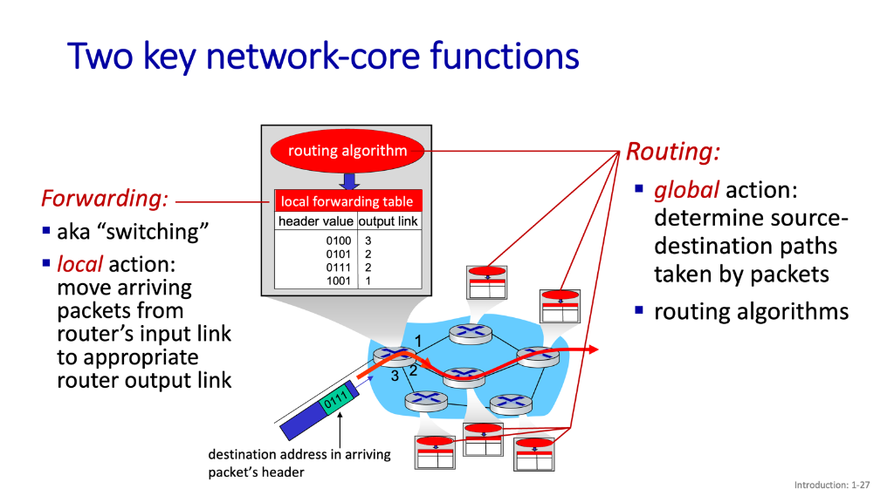
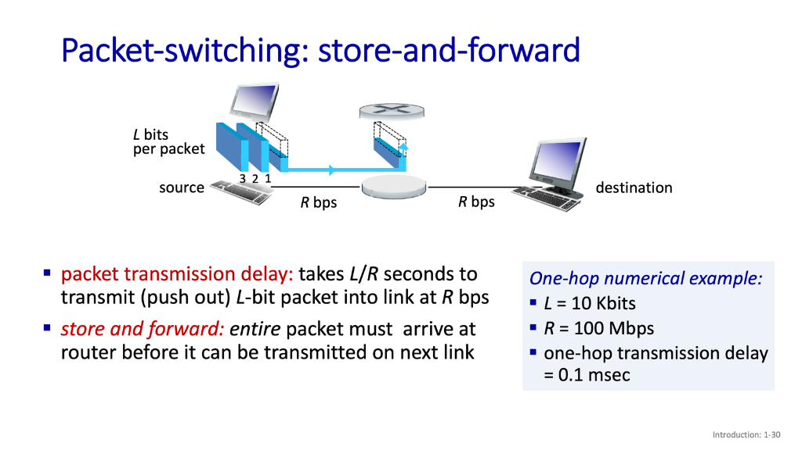
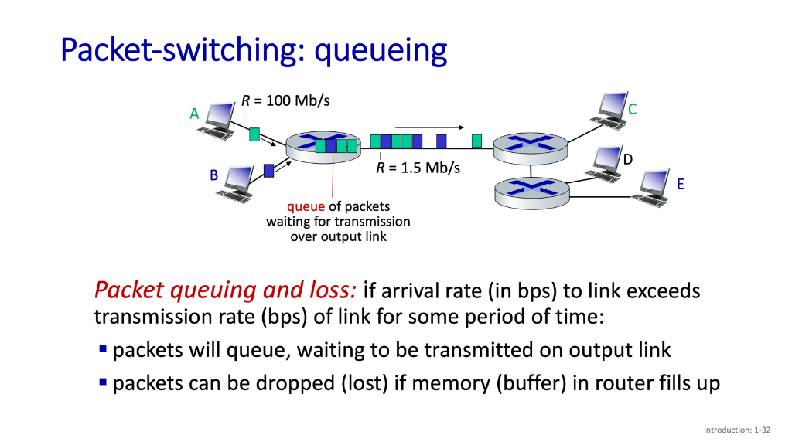
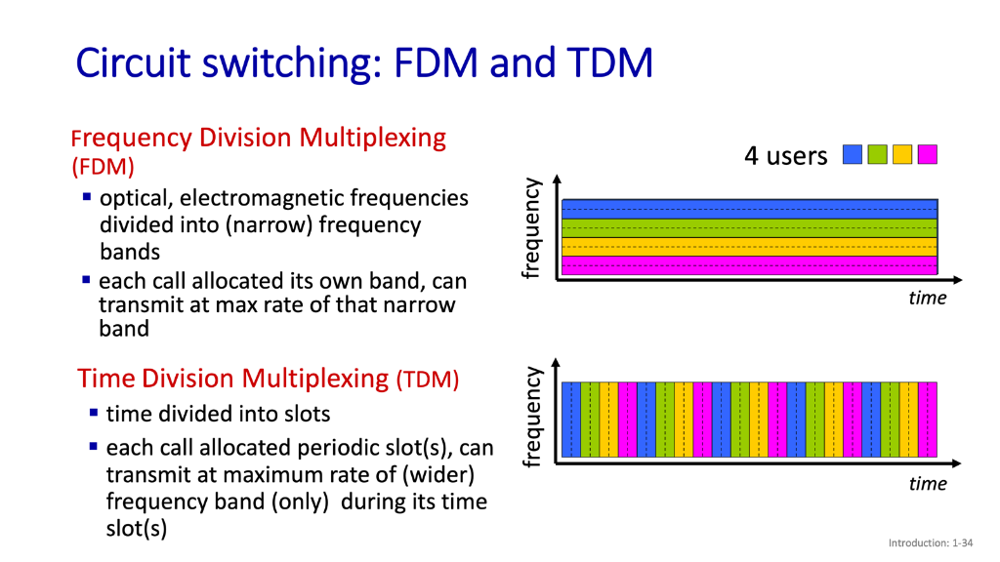
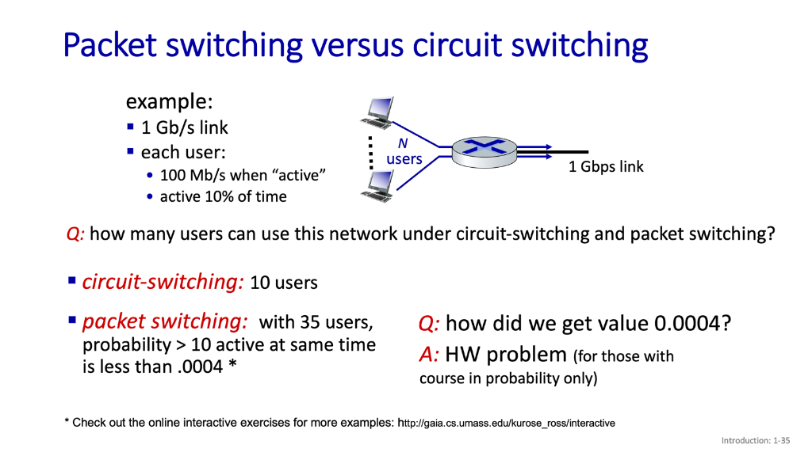
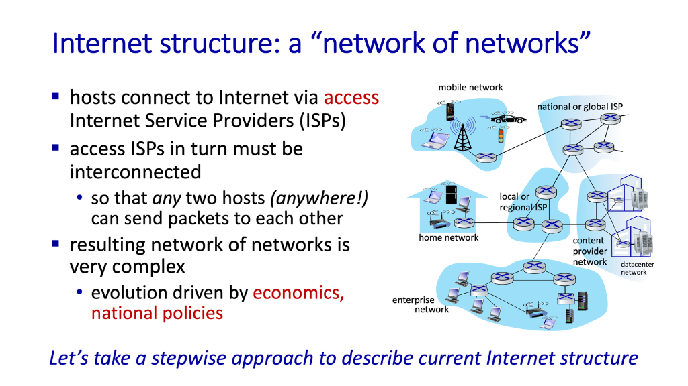
Empat Sumber Delay, Analogi Karavan, Throughput, Arsitektur Berlapis (OSI vs TCP/IP), dan Enkapsulasi
d_nodal = d_proc + d_queue + d_trans + d_prop
1. Processing Delay (d_proc)
Waktu router memeriksa header paket, mengecek error bit, dan menentukan link keluar (sangat cepat, hitungan mikrodetik).
2. Queuing Delay (d_queue)
Waktu paket menunggu antrean di buffer sebelum ditransmisikan ke kabel; paling bervariasi sesuai kepadatan trafik.
3. Transmission Delay (d_trans = L / R)
Waktu "mendorong" seluruh L bit paket masuk ke kabel dengan kapasitas bandwidth R bps (bukan soal jarak).
4. Propagation Delay (d_prop = d / s)
Waktu perambatan fisik bit sepanjang jarak kabel d dengan kecepatan gelombang s (bergantung jarak kota/negara).
Bayangkan 1 paket adalah rombongan 10 mobil yang harus melewati gerbang tol satu per satu.
Waktu untuk melayani dan "mendorong" kesepuluh mobil keluar dari gerbang tol menuju jalan bebas hambatan = Transmission Delay.
Setelah keluar gerbang tol, mobil melaju di jalan tol dengan kecepatan tetap (misal 100 km/jam).
Waktu tempuh fisik mobil dari gerbang tol Jakarta ke Bandung = Propagation Delay.
Throughput adalah laju aktual bit data yang berhasil dipindahkan dari sender ke receiver per detik (bits/sec).
min(R_c, R_s)).Ancaman Malware, DoS/DDoS, Sniffing & Spoofing, Sejarah Singkat Internet, Rangkuman, dan Tugas
Perangkat lunak jahat yang menginfeksi host untuk mencuri data atau membentuk jaringan botnet.
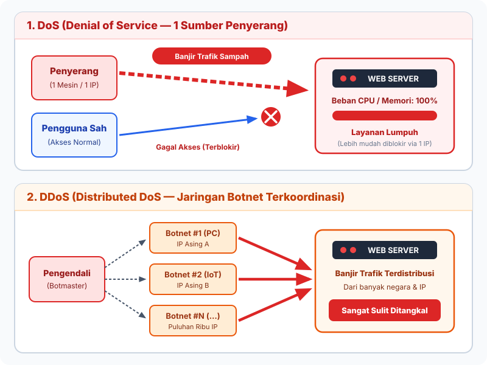
Kerjakan soal berikut dengan tulis tangan, lalu scan/foto untuk dikumpulkan ke E-Learning:
1. Apakah tugas dan fungsi utama dari seorang Network Administrator? Jelaskan!
2. Sebutkan dan jelaskan karakteristik dari berbagai macam Topologi dalam jaringan komputer (Bus, Star, Ring, Mesh)!
Silakan jika ada pertanyaan terkait materi Pengantar Jaringan Komputer.